Gayanara E-Commerce — Performance Review
A full analyst loop on a five-table Indonesian fashion e-commerce dataset: audit the data before trusting it, model revenue in SQL, read the findings honestly, and hand a stakeholder something they can act on. The dataset is synthetically generated — this page demonstrates workflow and judgment, not real business conclusions.
DuckDB · JupySQL (%%sql) · Python (pandas) · Tableau Public
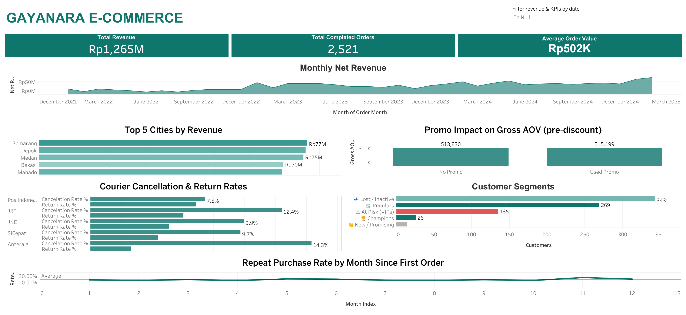
The headline numbers
Every figure below is computed from one revenue definition that reconciles to the rupiah against the source orders table. The three KPI cards on the dashboard tie to each other exactly: Rp 1,265,340,379 ÷ 2,521 orders = Rp 501,920.
About this dataset
Gayanara is a synthetically generated dataset published by NgulikData. It is used here to demonstrate the analytical workflow — auditing, SQL modeling, segmentation, and BI delivery — not to produce real business conclusions. Two findings on this page (flat category revenue, flat retention) are artifacts of the data generator rather than business signal, and are labelled as such where they appear.
What a fashion retailer would actually ask
Problem statement
Where is revenue coming from, which customers are worth re-engaging, and are the levers the business already pulls — discounts and courier choice — doing what management thinks they do?
Scope
Five tables, 10,586 rows, orders from January 2022 to February 2025. All revenue work excludes cancelled and returned orders; shipping is excluded as a pass-through cost.
Objectives
- Establish a single revenue definition that reconciles to source before reporting anything.
- Quantify growth and say whether it is volume-led or price-led.
- Segment the customer base into tiers marketing can export and act on.
- Test whether promo codes lift basket size, and whether any courier underperforms.
- Deliver a dashboard and a deck that state their own limits.
Five tables, deliberately messy
The dataset ships with the kind of problems a real extract has: duplicate email addresses, product categories written in a mix of Indonesian and English with inconsistent casing, and missing review text. That is the point — the audit is the first phase, not an afterthought.
| Table | Rows | Grain |
|---|---|---|
| customers | 800 | one row per customer account |
| orders | 3,000 | one row per order |
| order_items | 4,986 | one row per product line |
| products | 300 | one row per SKU |
| reviews | 1,500 | one row per review |
Raw CSVs are loaded into a local DuckDB database with read_csv_auto and queried through JupySQL's %%sql magic — full SQL against a real engine, no standalone server, and the notebook stays readable as SQL rather than as pandas chaining.
Audit → exploration → dashboard → stakeholder deck
Data quality audit
Nulls, duplicates, category standardization, referential integrity — before any metric is quoted
Exploratory analysis
Seven analytical tasks in SQL, from revenue trend to cohort retention
Dashboard
Seven views published to Tableau Public on pre-aggregated CSV extracts
Stakeholder deck
12 slides, including a dedicated slide on what the analysis cannot tell us
One revenue definition, reconciled to source
The most common way an analytics deliverable loses credibility is three KPIs computed three different ways. These five definitions are fixed once and used everywhere — in the notebooks, the dashboard, and the deck.
| Metric | Definition | Value |
|---|---|---|
| Gross revenue | SUM(order_items.subtotal_idr), excluding cancelled and returned orders |
Rp 1,296,768,000 |
| Net revenue | Gross revenue less order-level discounts | Rp 1,265,340,379 |
| Completed orders | Orders not cancelled and not returned | 2,521 |
| Average order value | Net revenue ÷ completed orders | Rp 501,920 |
| Units sold | SUM(order_items.quantity) |
5,442 |
Two decisions worth stating
- Net revenue reconciles to the rupiah against
orders.total_amount_idr. If it didn't, the discount logic would be wrong somewhere. - Shipping is excluded as a pass-through cost, and category revenue is reported gross — order-level discounts cannot be attributed down to individual line items, so category figures sum to Rp 1,296.8M rather than the Rp 1,265.3M headline. The two reconcile exactly; the gap is the Rp 31.4M of discounts.
Four checks before any number is quoted
Notebook 01_Data_Quality_Audit.ipynb — every query below is shown in full, with its output, on the rendered notebook page. Each check ends in a decision, and each decision is written down — including the one where the answer was "leave it alone."
01Null auditMissing values are concentrated in three columns, and only one of them constrains anything.
02Duplicate customersThree email addresses map to two customer_ids each — and I deliberately did not merge them.
customer_id is retained as the analytical grain, preserving the source system's own definition of a customer. Merging on email would silently invent a different entity than the one the business transacts with.03Category standardizationFourteen distinct category values collapse to six real ones.
CASE WHEN mapping to six clean categories — Jacket, Pants, Accessories, Dress, Shirt, T-Shirt — persisted as a new products.category_clean column so downstream queries never re-derive it.04Referential integrityZero orphaned rows — which is what makes the rest of the analysis safe.
order_items rows fail to match a products row.INNER JOIN for all revenue work. Without it, every product-level join would silently drop sales and no total would tie out.Seven questions, seven answers
Notebook 02_Exploratory_Data_Analysis_EDA.ipynb — the rendered notebook page has every query with its result table. Each task below states the business question, the approach — including where the obvious approach would have been wrong — and the finding.
01Revenue trendsRevenue roughly tripled over three years, and the growth is volume-led, not price-led.
discount_amount_idr lives on the order, so joining straight to order_items would multiply the discount once per line item and understate net revenue on every multi-item order.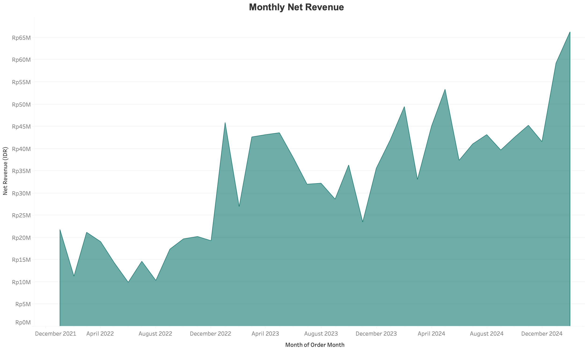
02Category performanceJackets lead on both units and revenue despite having the lowest average unit price.
| Category | Units sold | Gross revenue | Avg unit price |
|---|---|---|---|
| Jacket | 1,026 | Rp 223,984,000 | Rp 218,308 |
| Pants | 896 | Rp 221,044,000 | Rp 246,701 |
| Accessories | 971 | Rp 219,999,000 | Rp 226,570 |
| Dress | 874 | Rp 219,546,000 | Rp 251,197 |
| Shirt | 824 | Rp 216,616,000 | Rp 262,883 |
| T-Shirt | 851 | Rp 195,579,000 | Rp 229,823 |
03RFM segmentationThe headline isn't the segment sizes — it's that the median customer hasn't bought in 145 days.
04GeographyRevenue is spread evenly across cities — but encoding AOV as colour surfaces one outlier.
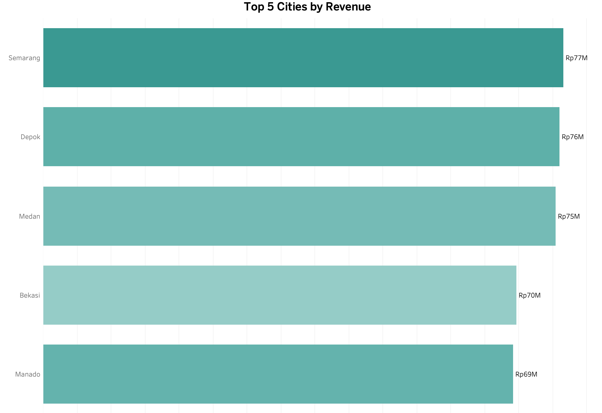
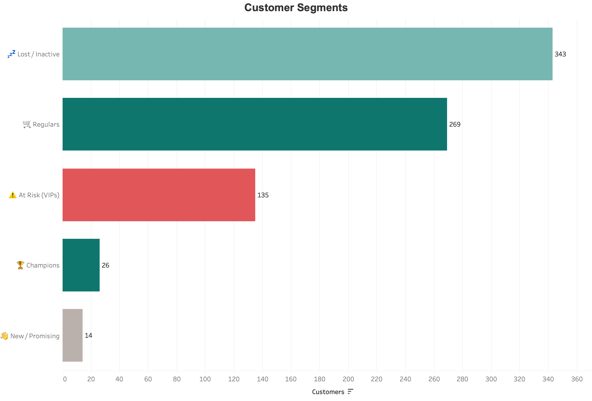
05Promo impactThe naive comparison said promos shrink baskets. The naive comparison was broken.
total_amount_idr between promo and organic orders shows promo AOV at Rp 484K against Rp 514K organic — an apparent 6% penalty. But total_amount_idr is recorded net of discount. The discount is subtracted from promo orders and then read back as a smaller basket. The metric is measuring the discount, not behaviour.| Group | Orders | Discount given | Net AOV (naive) | Gross AOV (correct) |
|---|---|---|---|---|
| Used promo | 1,025 | Rp 31,427,621 | Rp 484,538 | Rp 515,199 |
| No promo | 1,496 | Rp 0 | Rp 513,830 | Rp 513,830 |
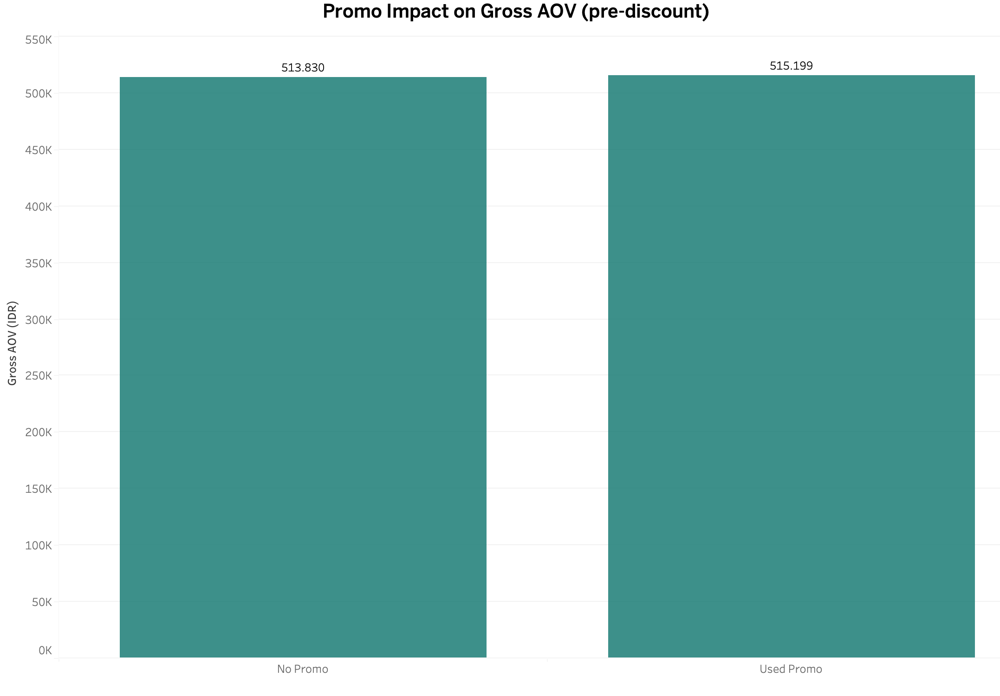
06Courier evaluationAnteraja has the worst cancellation rate and the best return rate — which points at a specific problem, not a bad partner.
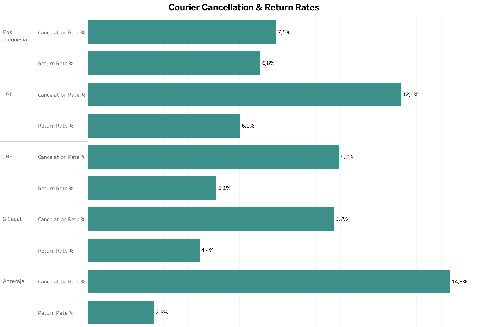
07Cohort retentionThe flat retention curve is the most interesting result on this page — and it is a finding about the data, not the business.
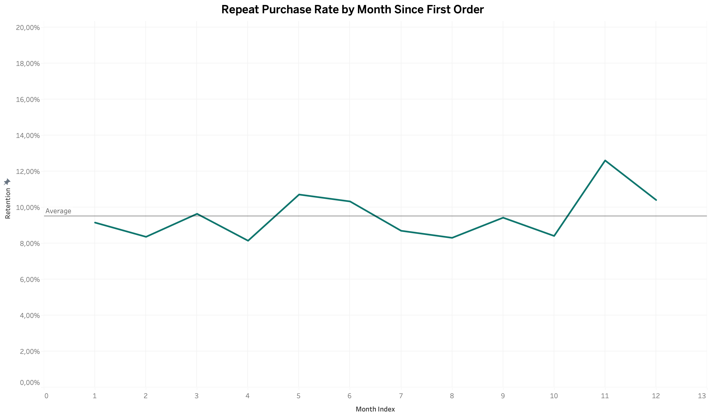
Seven views on Tableau Public
Built on the six pre-aggregated CSV extracts from Phase 2 rather than the raw transaction tables — the BI layer shouldn't be re-computing thousands of rows on every filter interaction.
What's on it
- Three KPI cards — Total Revenue, Completed Orders, AOV
- Monthly net revenue trend
- Top 5 cities by revenue, AOV encoded as colour
- Promo impact on gross AOV
- Courier cancellation and return rates
- Customer segments and the retention curve
Two things it does honestly
The KPI cards reconcile: Rp 1,265,340,379 ÷ 2,521 = Rp 501,920. A viewer can check the arithmetic on the card row itself.
The date filter applies to the revenue and KPI views only. Because the CSVs are separate Tableau data sources, a global filter isn't available — so the filter's scope is labelled rather than left to look global and quietly mislead.
Twelve slides, one of them about what we don't know
Executive summary, KPIs, revenue timeline, retention, geography, promo, courier, segments, recommendations, limitations, and a closing slide — plus a dedicated "What this analysis can and can't tell us" slide, placed before the recommendations rather than buried in an appendix.
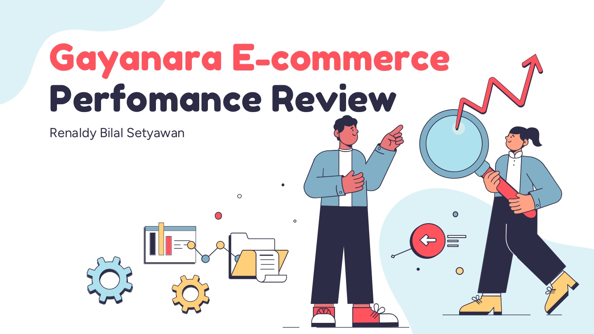
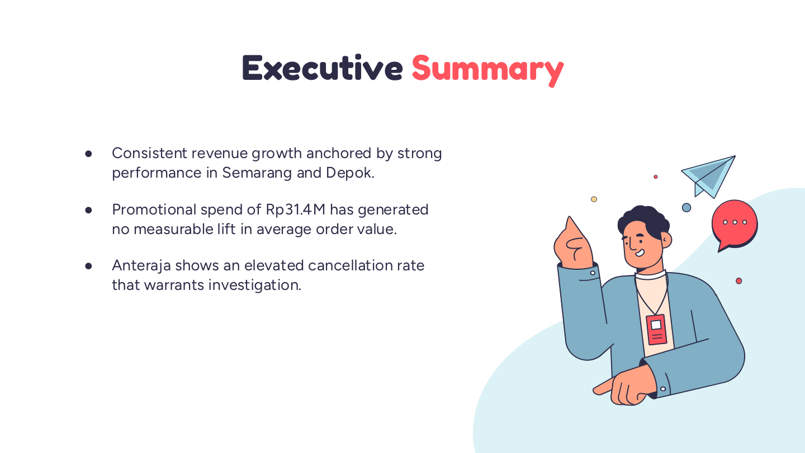
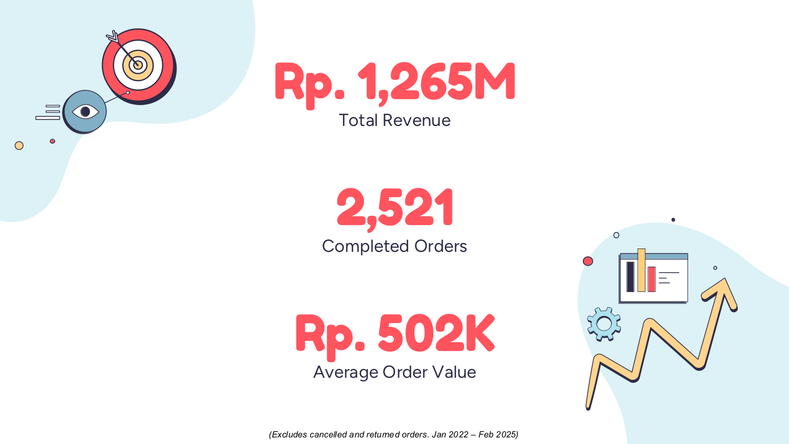
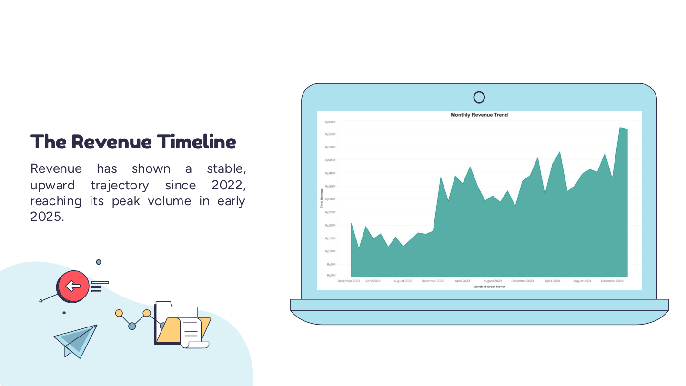
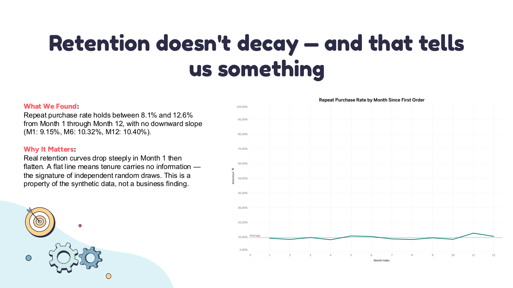
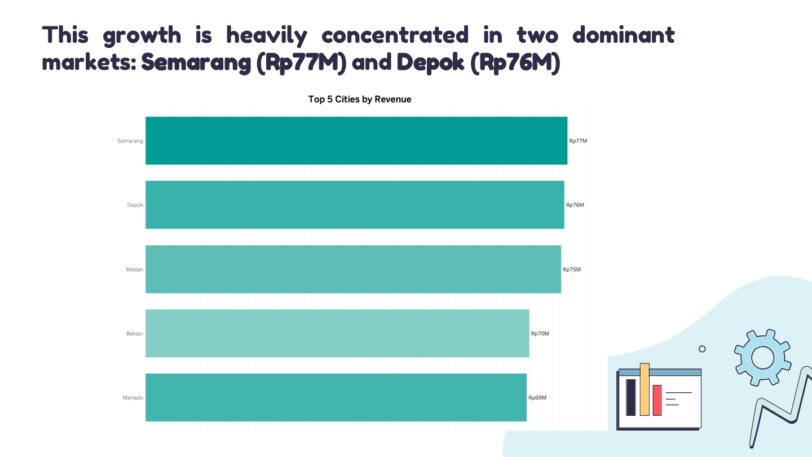
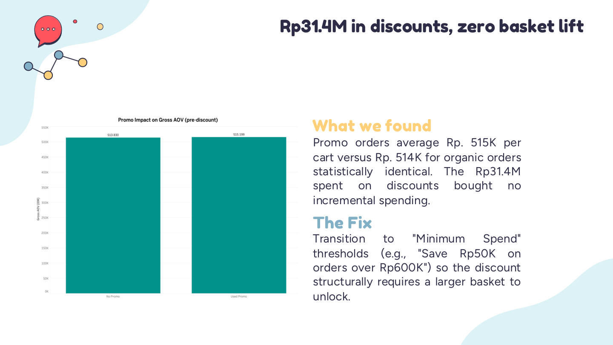
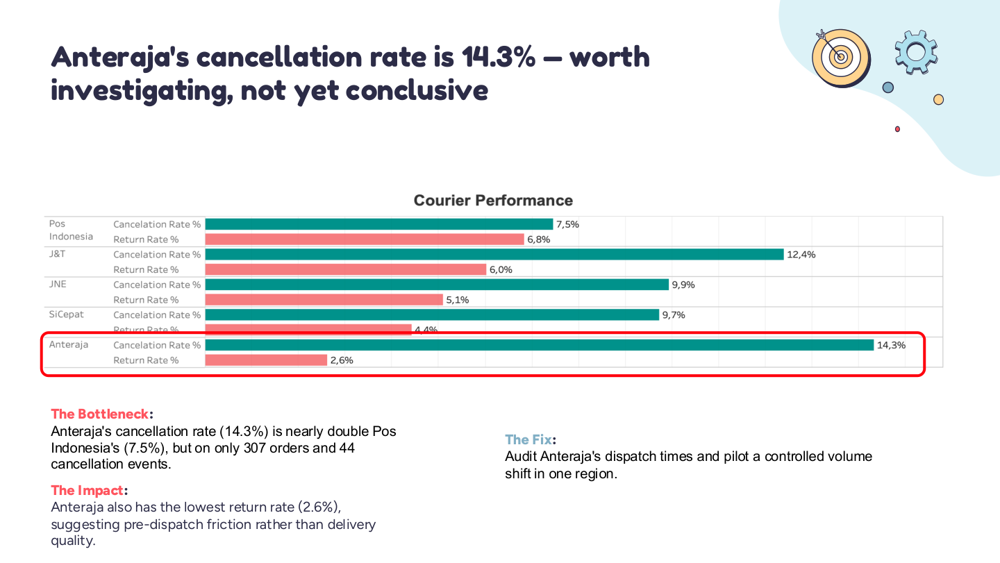
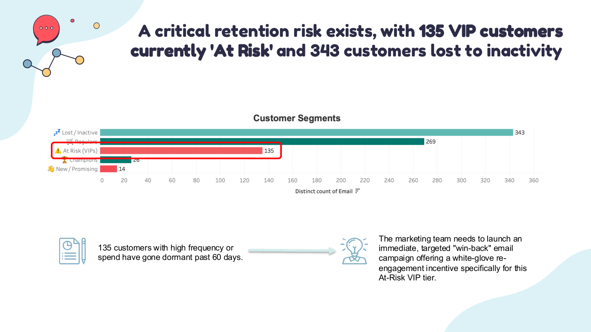
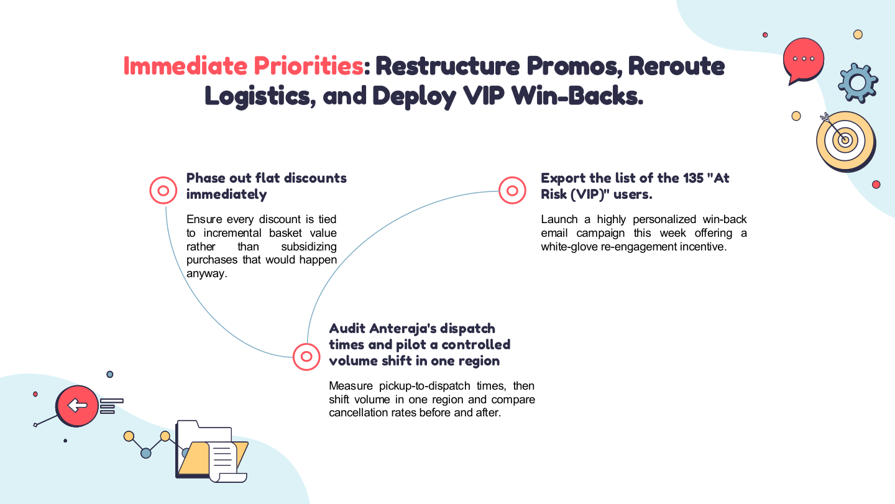
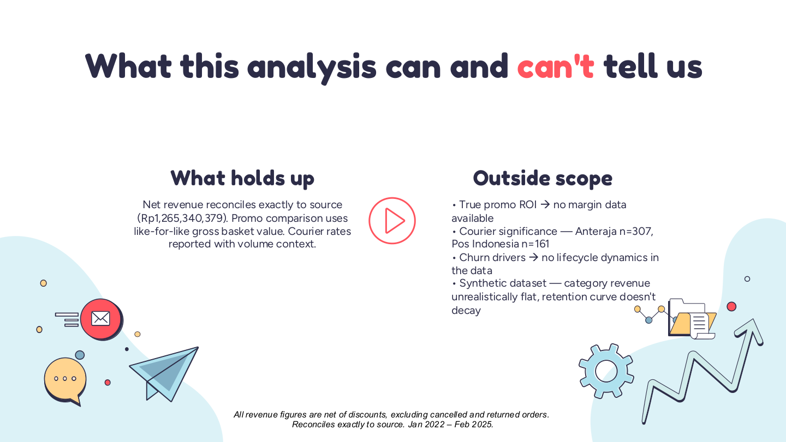
12 slides · use the arrows or your keyboard's ← → keys, or open the original PDF.
What I'd actually put in front of a stakeholder
What this analysis can't tell you
This section exists because the value of an analysis is bounded by what its data can actually support, and saying so is part of the deliverable — not a disclaimer bolted onto the end.
- No margin data. The promo analysis measures revenue impact, not true ROI. It is also observational rather than causal — establishing incrementality would require a holdout test.
- Courier samples are too small. Anteraja carries 307 orders and Pos Indonesia 161. No significance testing was performed, so courier differences are directional signals for investigation, not conclusions.
- No lifecycle dynamics in the data. The flat retention curve shows purchases behave as independent draws, so churn drivers are out of scope entirely rather than weakly estimated.
- Three duplicate emails were identified and deliberately not merged.
customer_idis retained as the grain; segment counts are directional at the account level. - RFM boundaries are fixed business rules, not statistical clusters. They were chosen for interpretability, and the "Lost" threshold in particular inflates that segment by construction.
- Scope is January 2022 – February 2025, and February 2025 may be a partial month — read the final point on the revenue trend with that in mind.
- The dataset is synthetic throughout. Flat category revenue and flat retention are generator artifacts. Nothing here is a claim about a real market.
AI assistance, disclosed
All SQL, analysis, and dashboard work is my own. After completing the first version, I ran the full project — notebooks, deck, and dashboard — through structured review with Claude (Anthropic), acting as a senior analyst, hiring manager, and end user.
That review surfaced four substantive errors I then corrected:
- My promo conclusion was reversed — I'd compared post-discount AOV against pre-discount AOV, which made promos look like they shrank baskets. Corrected to a like-for-like gross comparison.
- My three headline KPIs used three different revenue definitions and didn't reconcile. Consolidated to a single definition that ties exactly to source.
- Revenue was computed on catalog list price and ignored line-item quantity, understating units by 29%.
- I had read the flat retention curve as a churn crisis. It's actually diagnostic of synthetic data — real retention curves decay.
Claude also helped tighten the wording of findings and recommendations. Every number on this page was re-run and verified by me against the source data.